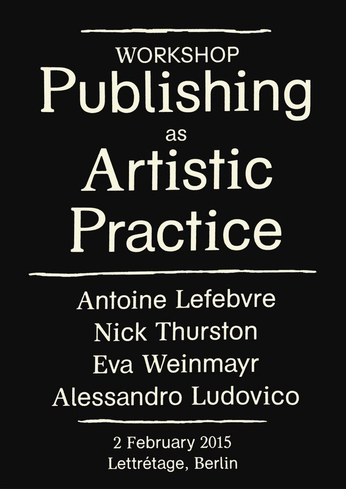

THIS WEBSITE DEALS WITH ART PUBLISHING AS POLITICAL PLATFORM
From Book to Publishing
It is of primary importance to establish from the beginning that the focal point
of artistic, aesthetic concerns has decidedly moved away from the debate
surrounding books that has left its mark on the last two decades. As a
consequence, the discussion concerning the artist's book has then progressed
to a new domain as well. The implications of this shift of emphasis-from
medium, i.e. artifact, to practice; and from book to publishing-surface
in the catchy flyer Jan Blessing and Constanze Hein designed for a workshop
in February 2015 that was organized with Kristin Mueller, a workshop which,
incidentally, served as the starting point for the present volume. The flyer
was designed to look like a book's dust jacket. But, there is no book
inside, it is empty, and this fact evinces a gap, which, in turn, produces a shift
in focus: away from the book and its contents, and toward the circumstances,
practices, and processes of producti9n that encompass and foster a book.
As such, the flyer embodies the notion of publishing that is usually difficult
to grasp. Moreover, it implicitly supplies a justification for the necessity
of this shift in focus by demonstrating that a published work cannot be
regarded independent of the publishing process and its determining factors.
The flyer in the form of a dust jacket echoes these processes and factors
and also makes them tangible. The present volume will be concerned with
just this.

Gilbert, Annette, (2016), ‘Publishing as Artistic Practice’, in Publishing as Artistic Practice eds. Annete Gilbert, Berlin, Sternberg Press (page 7)